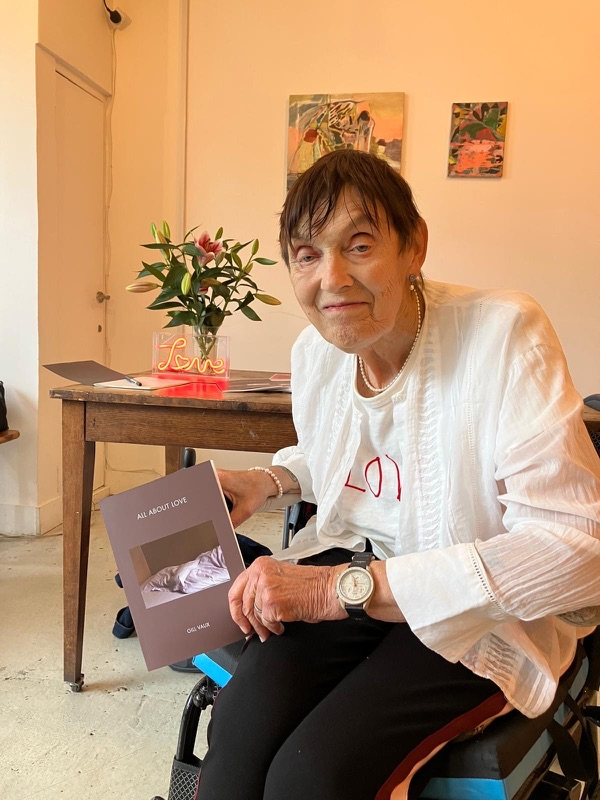
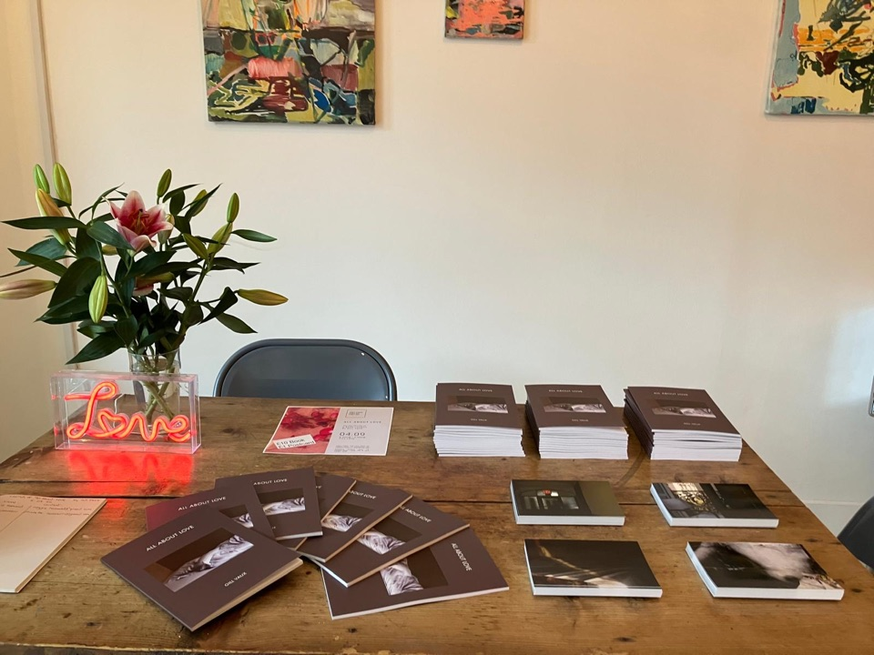

Editing is, for me, less about correcting a manuscript than accompanying a book as it gradually discovers its own form.
Some projects arrive almost complete. Others begin as loose collections of writing, images, notebooks, or ideas whose final shape is not yet apparent. My role is to work alongside the author, helping the project become more fully itself through conversation, reflection, and careful attention.
•
Every book unfolds differently.
Sometimes the work centres on language: clarifying a sentence, reshaping a chapter, or finding the rhythm that allows the writing to breathe. At other times it is the larger structure that matters most: the ordering of sections, the relationship between text and image, or the movement from one page to the next.
Rather than imposing a particular vision, I try to listen closely to what the work itself seems to be asking. Working at a slower pace can allow unexpected possibilities to emerge and give decisions time to settle.
•
For authors publishing independently, I can remain involved beyond the manuscript itself. This may include preparing files for print, advising on paper and format, liaising with independent printers, managing proof copies, and overseeing production through to the finished book.
Some authors enjoy taking part in every practical decision. Others prefer to receive the finished books, knowing the production has been carefully managed throughout.
Either way, the aim is the same: to help bring into the world a book that feels complete, thoughtful, and true to what it has become.
•
Editorial Consultation
A single conversation around an existing manuscript or developing project.
60 minutes · Online or in person (Bedford) · £75
Editorial Partnership
Ongoing work on a book’s language, structure, sequencing, and form, developed through regular conversations and editorial attention.
We can begin with early material or an existing manuscript, working together over weeks or months.
Quoted according to the scope of the work.
Publication & Production
Support in bringing an independently published project through to finished printed copies, including print preparation, format and materials, proofs, liaison with independent printers, and oversight of production.
Quoted according to the scope of the work.
These can be separate stages or one continuous collaboration, from early development to finished books.
Editorial and production work is commissioned and funded by the author, with fees agreed according to the scope of the project.
Printing, proof copies and delivery are additional costs, agreed with you before any orders are placed. Projects can be arranged in stages, with a payment schedule agreed at the outset.
If you’re considering a project, you’re welcome to get in touch before anything is committed.
Please send enquiries with the subject EDITING to:
contact@maxthackara.uk
•
Whether we meet once or work together over many months, my hope is always the same: to help create the conditions in which a book can become more fully what it already carries within it.
Selected Projects
Gill Vaux — All About Love
2026


An ongoing editorial and production partnership, developed through weekly conversations over several months.
About the project
Beginning with Gill’s photographs, writing and ideas for the book, we worked together on the selection and sequencing of material, the relationship between image and text, and the gradual development of the book’s form and design. I then accompanied the project through preparation and production, from proofs and print decisions to the finished book.
All About Love was completed in August 2026, followed by a small launch in Hackney in September.